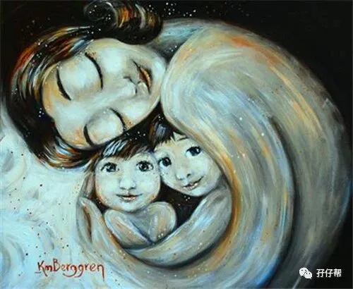
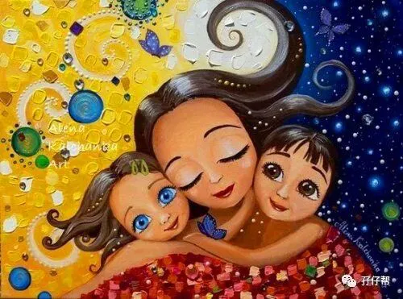
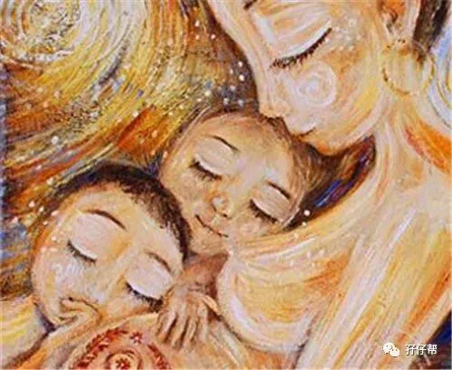
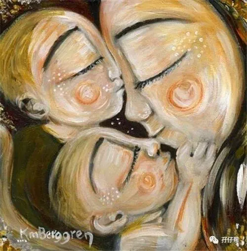
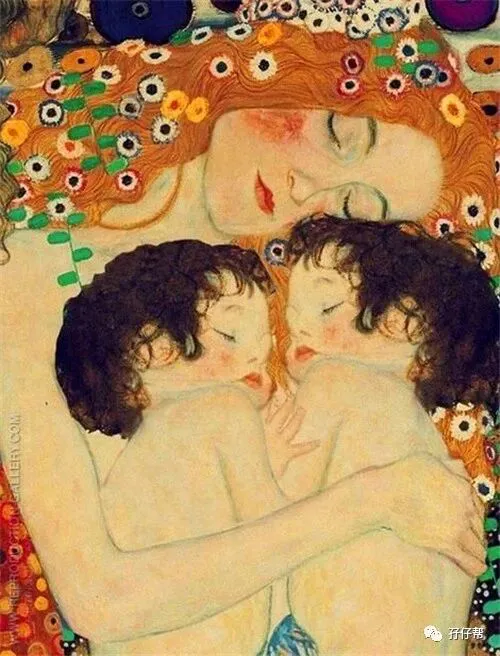

这个时代对女人要求很高，
如果你选择成为职业女性，
就会有人说你不顾家庭，
是个糟糕的母亲；
如果你选择成为全职妈妈，
又有人会说，
生儿育女是女人的本分，
这不算一个职业。
事实却是，
因为努力工作，
我才有了选择的权利。
因为当妈妈，
我才了解了生命的意义，
才有勇气去面对生活的残酷，
这两个身份并不矛盾。
---电影《找到你》
文|圆圈妈，一个文思如尿崩的双胎妈妈
图|来自网络，如有侵权，请联系删除
· 正 · 文 · 来 · 啦 ·
继续上一篇文章《家有双胞胎，我要辞职带俩娃吗？》，这篇来讨论下如何做一个全职双胎妈妈，注意，是高逼格的那种哦！
首先回答下，你理解中的高逼格全职妈妈是长什么样的？
我先说我的期望值...
那便是，有能力让自己幸福也能让自己爱的人幸福。
嗯，目标不是很高！
接下来继续发表我的妇人之见，与姑娘们共勉！
倘若你的方向不是这个，那请不用往下看了！
咱，道不同，不相为谋！
什么是全职妈妈
大部分人对「全职妈妈」这个定义的关键词是：一个女人，在家，带娃，做家务！
于我而言，全职妈妈是一个新型职业。
在这个世界上，最困难的工作莫过于全职妈妈。
你可以理解为，你并没有离开职场，而是换了工作环境和岗位。
与职场妈妈不同的是，全职妈妈连卖白菜的钱都赚不到，却要操着卖白粉的心。
这个岗位没有岗前培训，责任重大却不带薪资报酬，只会更累更苦，还得不到社会丁点认同。
日本脑科学婆婆加代子说，育儿其实是人类，女性，特别是妈妈的一种本能，或者说是生存能力，在这一点上，她们可能比一些善于思考的女性更胜一筹，不，应该说，本能一定会“获胜”。
与孩子而言，全职妈妈，是一个靠本能就能撑起一片天的女人！
武装自己，一切为了孩子的起跑线
我们经常说不让孩子输在起跑线，但你知道这个起跑线指的是什么吗？
没错！就是孩子的母亲！
“父母之爱子，则为之计深远”。
为人父母，思维和格局越大，孩子的起跑线就越高。
孩子是否具有旺盛的生命力，良好的秩序感，是否具有同情心和温顺的性格，无不映射出父母的价值观。
这也是我在圆圈兄弟入园了却离开职场的原因之一。
三流妈妈，就像孩子的保姆，只懂得伺候孩子吃喝拉撒，而一流妈妈，更懂得以身作则，给孩子做模范式榜样。
我想做那个一流的妈妈。
我始终坚信，有妈妈在身边高质量陪伴下长大的孩子，首先就赢在了起跑线上。
尤其是像我们这样特殊的双胞胎家庭，面临着不同寻常的家庭教育问题：两孩子的纠纷，争宠，微妙的亲子关系…
更加需要作为全职妈妈的你，陪伴在旁，因地制宜，因材施教。
也许你在职场上是呼风唤雨的“白骨精”，但在家庭教育上，你可能是愁眉苦脸的“灰姑娘”。
莫慌！
没有哪个女人天生会当妈妈！
都是有娃之后，一边吃苦一边学习一边总结，最后无师自通的！
因此，当全职妈妈后，为了两孩子不输在起跑线上，把你当年备战高考的那股狠劲拿出来吧！
以看书为主，网络碎片化学习为辅，看各种育儿指南和家庭教育类书籍，加入同频道的妈妈群，吸取过来人经验，并在不断的摸滚带爬中，摸索出适合你和孩子们的生活方式，喂养方式，教育方式。
想想那些轻生自杀的少男少女吧。
你会发现，培养一个生命力顽强，人生太积极，总是为大家着想，懂得体谅和关心他人，性格温顺的孩子，才是最让人羡慕的。
就冲这一点，哪怕将来真的庸庸无为，无法重返职场，你披上妈妈这个铠甲，挂帅出征，依然是两孩子最好的骄傲。
终身学习，与社会同步
一说到全职妈妈，就让人联想到“两耳不闻窗外事，一心只管屎尿屁”的老妈子。
担心与社会脱节，与队友不同步，与孩子有代沟，这些大概是所有全职妈妈最大的恐慌。
的确，全职妈妈的绝大部分时间都贡献给老公孩子，日子安逸得就像温水煮青蛙一样，不痛不痒，久而久之，就会跟不上社会发展的脚步。
但与社会脱节并不是全职妈妈的专利，换句话说，并不是做了全职妈妈就意味着被社会抛弃。
你只要不放弃自己，没人敢抛弃你！
最关键一点是，一定要在自己的专业领域类寻求进步，就算在家带娃，也绝不松懈！
哪怕你的时间被两孩子撕裂成碎片，你也别把自己弄丢了！
学习永远是人生赢家的尚方宝剑。
如果说学习育儿知识是为了教育好孩子，那么自我充值就是对自己负责！让自己变得更有份量！
一个女人，随着时间，总有一天所有的人都会要求你去做妻子，做妈妈，可你不能忘了提醒自己，你还有才华。
虽然你不能改变社会赋予一个女人最基本的定位，但你却可以给自己想要的人生！
圆圈兄弟入园后，我有充足的时间看自己感兴趣的心理学和母婴育儿类书籍。
为了公号优质内容输出， 每天拼命地学习新东西，我以前是个“育儿白痴”，现在我也有了自己的一套“育儿经”。
总之，不让自己闲下来，务必让自己随时处于不断学习和完善的状态中，以防哪天东山再起时，来一个华丽丽的转身！
不要觉得孩子健康成长，一切都值得！
不要觉得眼下老公很爱你，知足就好。
其实，你只对了一半。
孩子不是你的全部，终有一天会离开你。
老公跟你是同一船上的人，你拖后腿了，他也不会乐意到哪里去！
若你一直裹足不前，终有一天，除了同龄人会抛弃你，你的孩子也会离你越来越远，你的老公也会与你形同陌路。
虽然很现实，但这却是生活的原形，你得无条件接受着！
珍重自己，做个精致的女人
「身体是革命的本钱」，这个真理放之四海而皆准！尤其适合拿来警醒双胞胎妈妈！
作为全职双胎妈妈，每天高负荷运作着，长期以往，必定吃不消。
有人说击垮一个妈妈，只需要孩子生一场病。
这的确有道理。
但真正击垮妈妈的是眼睁睁看着孩子需要帮助，自己却因为身体原因无能为力，那种无力感和内疚感才是压死骆驼的最后一根稻草。
试想一下，没有健康的身体，拿什么去护犊。
说句不好听的，没有强壮的身体，哪天小三在你眼前窜，你都没力气揍她，只有哭的份儿！
因此，请姑娘们，甭管你眼下多么“人在娃娃堆里，身不由己”，都请保重身体，珍惜自己。
妈妈是一个家庭幸福的源泉，只要妈妈不倒，幸福生活才有下文！
与此同时，注意身体的同时还要注重形体。
与不断学习，充实自己同等重要的是你的外在形象。
据说，妈妈的外在形象会决定孩子在众人面前够不够自信。
孩子虽小，审美能力却不容小觑，有一个形象好的妈妈，孩子自然会产生“我妈妈比你妈妈强”的自豪感，因此会更加自信勇敢。
“酒深不怕巷子深”已经过时了！
你试试看，蓬头垢面拖着两个满脸鼻涕虫的孩子上街，是不是有大妈的既视感。
因此，不管你身在何处，把家里打扫得多么干净，请不要忘记，最应该收拾的是自己！
即便不能貌美如花也要爽心悦目，即便不能德传四方也要得体优雅。
去健身房，去瑜伽课，去美容院….都可以！
赶紧行动起来吧！
也许你会说一人带双胞胎，还干家务活，运动量已经爆表，无需再去折腾了。
非也！
你拖地洗碗会让腰都直不起来，但是你跳完一圈拉丁舞，你会昂首挺胸，即兴来一段性感狂野的猫步。
这是两个完全不一样的层次和等级。
别怪世人的眼光俗，只能说自己的档次低，境界不够！
写在最后的话
全职妈妈这个话题，万里长征走完一圈都聊不完，我其实还有很多想法要和大家分享！
写完上一篇《家有双胞胎，我要辞职带俩娃吗？》之后，就有读者催着看下一篇。
压力山大啊！担心自己的观点没啥营养或者太偏，引来诟病。
毕竟，要不要做全职妈妈，怎样做全职妈妈，全看自己的选择和个人追求，并没有绝对的答案！
但不管怎样，写这些都是希望全职双胎妈妈都能从中找到些慰藉，明确自己的人生方向。
既不耽误爱孩子，也不影响爱自己的权利！
我当全职妈妈不到半年，想法还是有点“too young， too simple!”
目前看，我还比较乐观，至少写这篇文章的时候，我都是满满的正能量。
全职妈妈不可怕，可怕的是只甘心一辈子做全职妈妈，而不懂得完善自己，充实自己。
在家带娃其实是一段很好的增值期。
有句话说的极是：蹲下来是为了跳得更高。
全职妈妈不等于牺牲自我，相反，全职妈妈，其实在给迷茫的你一个看清自己的机会。
你终于可以放慢脚步，停下来思考，审视自己，认清自我，找准定位，好好考虑未来的人生方向。
「当妈之后是女人的一个重要分水岭」
我一直没有办法理解这句话，现在，我秒懂了。
除了觉得自己真的是一名中年妇女，还意识到自己的责任义务，更多的是为自己而活，才能为在乎的人活得更漂亮，更精彩。
这便是我的“鸿鹄之志”！
我很喜欢一句话：「我心目中真正的女性独立，就是独立地不受旁人干扰，不受社会压力的影响，选择自己真正想要走的道路。」
没有哪个孩子喜欢妈妈唯唯诺诺地付出，也没有哪个孩子愿意看见妈妈活得个性全无。
妈妈应该活出自己，要给孩子一个典范，孩子自然就会成长为他们所看见的人。
妈妈牺牲奉献，孩子也就习惯了委屈讨好；
妈妈快意人生，孩子才会洒脱烂漫。
最后，祝全天下的双胞胎妈妈们，母亲节快乐！
这篇文章选在母亲节发布，是别有用意的！
妈妈这个角色的伟大，众人皆知，那是因为妈妈们默默的付出，无私的奉献。
但是我希望别人对我是一位母亲表示敬意，并不是因为我把孩子教育得多么优秀出色，把老公调教得多么赏心悦目，而是因为我作为全职妈妈本身就很魅力四射！
-END-
今日互动话题
#你想要什么样的母亲节礼物呢？#
评论区聊一聊
说出你的愿望吧
一好文推荐一
一加入社群一
一关注孖仔帮一
点击“阅读原文”，直达双胞胎育儿网站www.sgguy.com.
你“在看”吗？点一下呗！☟☟☟





